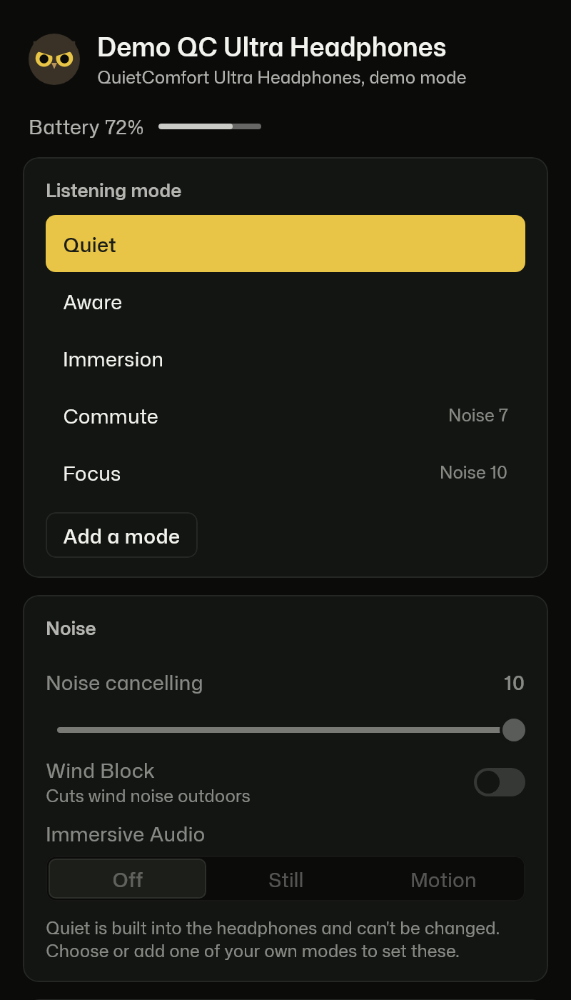

Ruru
A free, open-source app for Bose headphones on Windows, macOS, Linux, Android and iPhone. It changes listening modes, noise cancelling, the equaliser and other settings from the device you're using.
There is no account, no cloud and no analytics.

Download
Each file comes from the latest release on GitHub. The release lists the SHA-256 of every file in SHA256SUMS.txt.
-
Windows 10 and 11Your system
Tested on Windows 11 with QC Ultra Headphones (1st Gen).
-
macOS 12 and newer, Apple siliconYour system
Built and started on GitHub's Macs. Not yet tried with headphones.
-
Linux with BlueZYour system
Built and opened in demo mode on GitHub's Linux machines. Not yet tried with headphones. The .deb needs Ubuntu 24.04, Debian 13 or newer.
-
Android 9 and newerYour system
Opened in demo mode on an emulator. Not yet tried on a phone.
-
iPhone, iOS 16 and newerYour system
The file is unsigned, so install it with your sideloading tool. Control over Bluetooth LE is built but hasn't been tried on a real iPhone yet.
Every app has a demo mode with a simulated QC Ultra Headphones (1st Gen), so you can look around without headphones.
Opening Ruru the first time
The Windows and Mac apps aren't code-signed yet, so Windows SmartScreen and macOS Gatekeeper warn the first time you open them. On Windows choose More info, then Run anyway. On a Mac open System Settings, then Privacy & Security, and choose Open Anyway. On macOS 12 it's System Preferences, then Security & Privacy.
If Windows says Smart App Control blocked Ruru, it can't run on that PC. Smart App Control only lets signed apps through and has no way to allow one app.
Close the Bose app on the same device first, because only one app can control the headphones at a time.
What it changes
- Listening modes, including adding and removing your own
- Noise cancelling level, Wind Block and Immersive Audio
- The headphones' equaliser
- The shortcut button
- Self voice, multipoint, auto-off, auto play and pause, auto-answer and voice prompts
On a computer, Ruru sits in the tray with the battery level and switches mode without opening the window. It doesn't install firmware updates. Use the Bose app for those.
Headphones
Ruru has been tested with QC Ultra Headphones (1st Gen) on firmware 1.6.7.
These models are expected to work, based on Earshot's research and bosectl's captures, but haven't been tried with Ruru yet.
- QC Ultra Headphones (2nd Gen)
- QC Ultra Earbuds (1st and 2nd Gen)
- QC Headphones (1st and 2nd Gen)
- QC SC, QC45 and QC SE
- QC Earbuds II and QC Earbuds (2020)
- Ultra Open Earbuds
- Noise Cancelling Headphones 700
If you try Ruru with any of these, please open a Headphones report on GitHub and paste the connection report from the bottom of the app.
Privacy
Ruru talks only to your headphones. It sends nothing anywhere, and it has no crash reporting and no update checks. The Android app has no internet permission. The connection report is text you copy yourself; it masks Bluetooth addresses and leaves out the names of your other devices.
This website has no cookies and no analytics. When it loads, it asks GitHub for the latest version and its files.
Support
Ruru is free and open source under the MIT licence. If it helps you, you can shout me a coffee on Ko-fi.